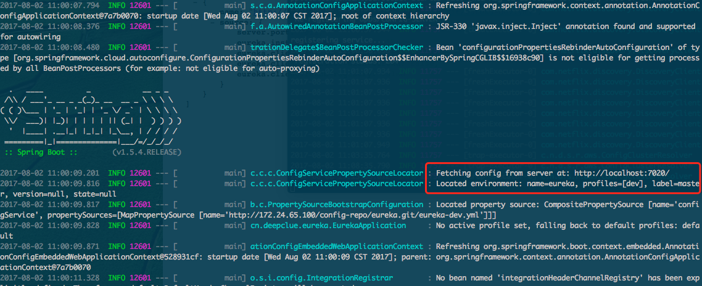
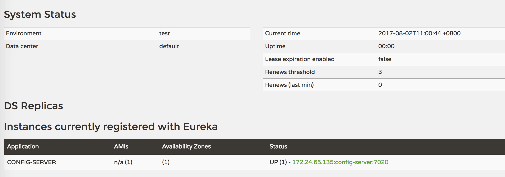

在我们现在的架构中，一切都是由 Eureka 开始的，因为业务中的配置中心地址是使用 service-id 的形式，从注册中心来自动发现配置中心地址。
这就出现了一个矛盾，如果我们想将 Eureka Server 的配置外置的话就不太可行了，因为 Eureka 启动前，配置中心还没有注册进来，所以它也无法发现配置中心。
现在我们项目中的做法是：Eureka Server 的所有配置文件都是写在自己的 application.yml 中。
今天我想到一个思路，并验证了其可行性：
可以先将 Config Server 启动起来，因为 Config Server 需要注册到 Eureka Server 上，但是注册失败并不会导致服务的终止，只是在发心跳包时会有一些错误信息。也就是说，即便不注册上去，配置中心也是可以通过 IP+端口号 的形式来访问的。
Config Server 的 application.yml 如下：
1 | management: |
然后我们在 Git 中新建 eureka 仓库，并创建 eureka-dev.yml 文件，其内容如下：
1 | server: |
然后在 Eureka Server 项目中新建 bootstrap.yml 文件，内容如下：
1 | spring: |
这里我们使用 IP+端口号 的形式来访问配置中心，然后将之前的 application.yml 配置文件删除。
现在我们来分别启动这两个项目，注意启动顺序：先启动 Config Server，再启动 Eureka Server，启动完 Config Server 后会看到一些错误，暂时不用理会，启动 Eureka Server 时我们可以在控制台中看到可以正常拉取配置，如图：

待 Eureka Server 启动完后，再回来看 Config Server 的控制台，已经不报错了，到 http://localhost:7011/ 看到，配置中心也成功注册上来，这也说明我们的 Eureka Server 已经成功读到了 配置中心 提供的配置文件。

以上验证了这种思路是可行的，回头可以将线上环境也修改为这种方式。